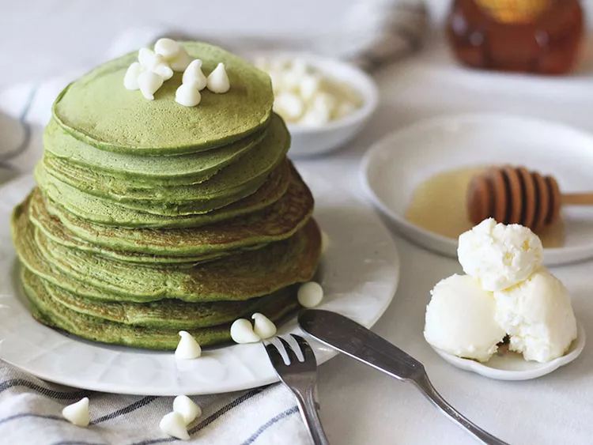

Home Page
Matcha Pancakes

These matcha pancakes are a treat. We're strong believers in sleeping in
and brunching on the weekends (we didn't work hard all week for nothing!),
so it's only natural that we treat ourselves to one of our favorite brunch
foods: the classic pancake. There's just something about stacks of fluffy,
buttery breakfast cakes that make us feel like we're starting the morning
off with dessert, especially if chocolate chips are inside. Happy
brunching! Top with more white chocolate chips, honey, and butter, and
enjoy.
Ingredients
- 1 cup all-purpose flour
- 1 tablespoon green tea powder (matcha)
- 2 teaspoons baking powder
- ¼ teaspoon salt
- 1 cup cashew milk
- 1 tablespoon cashew milk
- 1 large egg
- 2 tablespoons olive oil
- 2 teaspoons vanilla extract
- ¼ cup white chocolate chips
Steps
-
Whisk together flour, matcha, baking powder, and salt in a large bowl.
Make a well in the center of mixture; add 1 cup plus 1 tablespoon cashew
milk, egg, olive oil, and vanilla to the well. Whisk batter briefly
until just a few small clumps of flour remain. Add chocolate chips; stir
again briefly.
-
Grease a small saucepan lightly; heat over medium-low heat. Transfer 2
to 3 spoonfuls batter onto the center of the pan, spreading batter with
the back of the spoon. Cook until small bubbles rise to the surface and
burst, about 1 minute. Flip and cook until the edges are lightly golden
brown, about 1 minute more. Repeat with remaining batter.